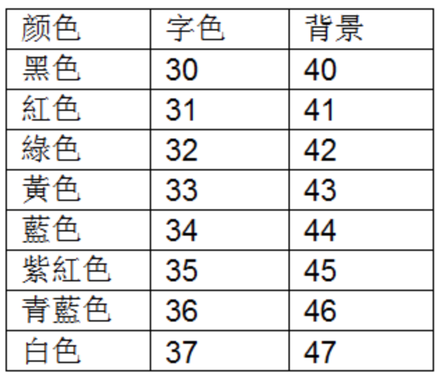
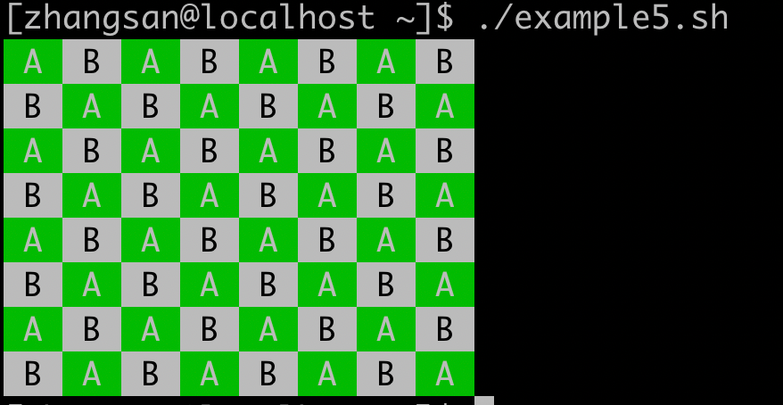

Linux漫谈系列--shell 编程（2）
本节主要介绍流程控制语句、循环控制语句、函数等编程知识。并在最后给出了一些实践应用的示例。
1、判断语句 if
三种判断语句：
.png)
例题：嵌套举例
.png)
2、多分支选择
.png)
一个比较复杂的例子：/root/examplesh/example30.sh
统计内存中出于各种状态的进程分别有多少个？使用了多分支选择。
.png)
运行结果如下：
.png)
3、for 循环
.png)
例题
常见的两种循环：
.png)
再举两个循环的例子：
.png)
用数值列表循环。
.png)
4、while 循环
.png)
5、until 循环
.png)
6、三种无限循环
.png)
7、continue和break语句
.png)
8、函数
（1）不带返回值的函数
.png)
（2）带返回值的函数
提示：返回值通过 $? 变量返回。
.png)
（3）向函数内部传递参数
.png)
通过位置参数向子函数传递参数。
（4）文件引用
在一个文件中定义变量和函数，在另一个文件中引用。
.png)
9、有趣的程序
（1）fork 炸弹
.png)
（2）汉诺塔游戏
.png)
（3）单词练习小游戏
.png)
（4）窃取用户的密码
.png)
该程序运行过程为：
.png)
10、企业面试实战项目
（1）探测主机信息
.png)
运行结果如下：
.png)
（2）测试局域网里面有多少台主机
第一个例子，用单线程扫描，速度慢
.png)
第二个例子，用多线程扫描，速度快
.png)
（3）从网络获取天气预报
.png)
运行结果为：
.png)
11、实践项目（实验报告参考）
（1）实验参考 第一题
.png)
（2）实验参考 第二题
.png)
（3）实验参考 第三题
.png)
（4）实验参考 第四题
.png)
（5）实验参考 第五题
.png)
运行结果如下：

字符背景色和前景色的设置的解释：
.png)

例如把这里的背景色44更改为42，那么程序运行如下所示：

（6）实验参考 第 六题
.png)
（7）实验参考 第七题
.png)
例
.png)
运行结果如下：
.png)
12、推荐两个学习 Linux的网站
Bash 脚本教程 - 网道 (wangdoc.com) 阮一峰的shell教程，值得一看。
菜鸟教程 Linux 基础和 shell 编程基础
随堂测试